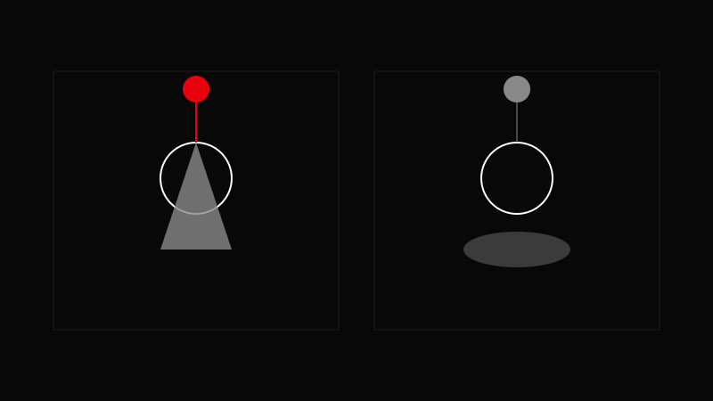

AVA CREATORS TOOLKIT · LIGHTING
HARD VS SOFT LIGHT
Bigger source = softer light
Bigger source = softer light

Small direct source = hard; large diffused source = soft.
Move light closer for softness.
Add diffusion for smoother shadows.
Use bare bulbs or fresnels for hard light.
Shape shadows with flags.
Soft light still needs direction—don't flatten it.
Confusing soft light with low‑contrast lighting.